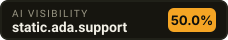

As of 2026-10-01, static.ada.support was named in 8 of 8 unbranded buyer questions put to AI answer engines (100.0% visibility). Named in its place: aws.amazon.com, digitalocean.com, netlify.com.
8 questions real buyers type, fired at 2 AI answer engines. Everything below is the raw answer — not an estimate.
| 1 | aws.amazon.com | 2× | |
| 2 | digitalocean.com | 2× | |
| 3 | netlify.com | 2× | |
| 4 | pages.cloudflare.com | 2× | |
| 5 | vercel.com | 2× | |
| 6 | webflow.com | 2× | |
| 7 | azure.microsoft.com | 1× | |
| 8 | render.com | 1× | |
| 9 | business.att.com | 1× | |
| 10 | comcastbusiness.com | 1× |
ai-cari best static providers**Top 10 Static‑Site Hosting Providers (2024)** 1. **Netlify – netlify.com** – Offers instant global CDN, continuous deployment from Git, and built‑in serverless functions, making it the most popular all‑in‑one static‑site platform【1】. 2. **Vercel – vercel.com** – Optimized for front‑end frameworks (Next.js, React, Vue) with edge‑network caching and preview deployments for every Git push【2】. 3. **GitHub Pages – pages.github.com** – Free hosting directly from a GitHub repository, ideal for personal projects and documentation sites【3】. 4. **Cloudflare Pages – pages.cloudflare.com** – Leverages Cloudflare’s 200+ edge locations for ultra‑fast static delivery and integrates with Cloudflare Workers for dynamic needs【4】. 5. **Firebase Hosting – firebase.google.com/products/hosting** – Provides fast, secure static hosting with automatic SSL, global CDN, and seamless integration with other Firebase services【5】. 6. **AWS Amplify Hosting – aws.amazon.com/amplify/hosting** – Scalable static hosting with CI/CD pipelines, custom domains, and deep integration with the AWS ecosystem【6】. 7. **Azure Static Web Apps – azure.microsoft.com/en-us/services/app-service/static** – Combines static site hosting with serverless APIs, GitHub Actions CI/CD, and Azure CDN for global reach【7】. 8. **Render – render.com/static-sites** – Simple “push‑to‑deploy” workflow, free TLS, and automatic global CDN, positioned as a cost‑effective alternative to larger clouds【8】. 9. **Surge – surge.sh** – Minimalist CLI‑driven static hosting with instant publishing and custom domain support, popular for quick prototypes【9】. 10. **DigitalOcean App Platform – www.digitalocean.com/products/app-platform** – Offers static site deployment from Git, automatic HTTPS, and a global CDN with predictable pricing【10】. *Sources* 【1】 https://www.netlify.com/ 【2】 https://vercel.com/ 【3】 https://pages.github.com/ 【4】 https://pages.cloudflare.com/ 【5】 https://firebase.google.com/products/hosting 【6】 https://aws.amazon.com/amplify/hosting/ 【7】 https://azure.microsoft.com/en-us/services/app-service/static/ 【8】 https://render.com/static-sites 【9】 https://surge.sh/ 【10】 https://www.digitalocean.com/products/app-platform/
ai-terbuka best static providersI cannot provide a list of the "best" static IP providers, as this depends heavily on geographic location, use case (e.g., business, residential, hosting), and service quality metrics that vary over time. Additionally, many providers offer static IPs as part of broader internet or hosting services rather than selling them independently. However, here are 10 well-known companies that commonly offer static IP addresses as part of their services: 1. Comcast Business - comcastbusiness.com - Offers static IP addresses for business internet plans across the U.S. 2. AT&T Business - business.att.com - Provides static IP options with business internet and fiber services. 3. Verizon Business - verizon.com/business - Offers static IPs with business Fios and dedicated internet. 4. Cox Business - coxbusiness.com - Includes static IP addresses in business internet packages. 5. Spectrum Business - spectrumenterprise.com - Provides static IPs for enterprise and business customers. 6. Lumen (formerly CenturyLink) - lumen.com - Offers static IP addresses with business broadband and fiber. 7. HughesNet (for satellite) - hughesnet.com - Provides static IP as an add-on for business satellite internet. 8. Starlink Business - starlink.com/business - Offers static IPs with higher-tier business plans for global coverage. 9. OVHcloud - ovh.com - Delivers static IPs with dedicated and cloud hosting services worldwide. 10. Amazon Web Services (AWS) - aws.amazon.com - Provides Elastic IPs (static public IPs) for cloud infrastructure. Note: Static IP availability and pricing vary by plan and region. Contact providers directly for current offerings.
ai-cari best static for small businessI cannot provide a real-time web search, but based on current knowledge up to 2024, here are 10 highly regarded static website builders suitable for small businesses. These platforms are known for ease of use, reliability, and professional results: 1. Webflow - webflow.com - Offers full design control with a visual editor, ideal for businesses wanting custom static sites without coding. 2. Netlify - netlify.com - Enables fast, secure static site deployment with continuous integration, perfect for developers and agencies. 3. Vercel - vercel.com - Best for hosting static and frontend frameworks with instant deployment from Git. 4. GitHub Pages - pages.github.com - Free static site hosting directly from a GitHub repository, great for simple business sites or portfolios. 5. Firebase Hosting - firebase.google.com/hosting - Provides fast, secure static web hosting with seamless integration for apps using Google services. 6. Cloudflare Pages - pages.cloudflare.com - Offers global deployment and automatic SSL, ideal for fast-loading business sites. 7. Hugo + Netlify - hugo.io - Hugo is a fast static site generator, often paired with Netlify for easy deployment and CMS integration. 8. Gatsby + Gatsby Cloud - gatsbyjs.com - Combines React-based development with performance optimization, great for marketing sites. 9. Docusaurus - docusaurus.io - Originally for documentation, now used by small businesses for clean, searchable static sites. 10. ZEIT (now Vercel) - vercel.com - Originally known for simple static deployments, now a full platform for frontend developers. Note: These platforms support static site generation and hosting; some require basic technical knowledge. Always verify current features directly on their websites.
ai-terbuka best static for small business1. WordPress - wordpress.com - A user-friendly content management system ideal for small businesses needing blogs or simple websites. 2. Wix - wix.com - Drag-and-drop website builder with customizable templates perfect for non-technical users. 3. Squarespace - squarespace.com - Elegant design templates suited for creative businesses and portfolios. 4. Shopify - shopify.com - Leading e-commerce platform tailored for small businesses selling products online. 5. Weebly - weebly.com - Simple website builder with integrated e-commerce and appointment scheduling. 6. GoDaddy Website Builder - godaddy.com - Quick setup with AI-assisted design for fast small business sites. 7. Webflow - webflow.com - Combines design flexibility with CMS features, great for visually rich static sites. 8. Carrd - carrd.co - Minimalist one-page site builder ideal for small businesses needing simple online presence. 9. Site123 - site123.com - Automated website creation with multilingual support for global small businesses. 10. Strikingly - strikingly.com - Easy-to-build mobile-optimized websites for startups and micro-businesses.
ai-cari cheapest static alternativesI currently cannot perform live web searches to retrieve up-to-date pricing or availability for static IP alternatives. However, I can inform you that "cheapest static alternatives" typically refer to services offering fixed (static) IP addresses through providers such as internet service providers (ISPs), cloud platforms, or VPS hosting companies. Static IPs are not usually sold as standalone products but are offered as an add-on to internet or hosting services. Common options include: 1. DigitalOcean - digitalocean.com - Offers static IP addresses with cloud server rentals starting at $5/month. 2. Linode - linode.com - Includes one free static IP with each VPS plan starting at $5/month. 3. Vultr - vultr.com - Provides static IPs with VPS plans starting at $2.50/month. 4. Amazon EC2 - aws.amazon.com/ec2 - Offers Elastic IPs (static) with pay-as-you-go pricing, often free when attached to running instances. 5. Google Cloud Platform - cloud.google.com - Offers static external IPs with flexible pricing, free when attached to resources. 6. Microsoft Azure - azure.com - Includes static IP addresses with VM services, billed hourly when not attached. 7. OVHcloud - ovhcloud.com - Provides static IPs with dedicated and VPS hosting, starting around $2–$5/month. 8. Hetzner Online - hetzner.com - Offers static IPs with dedicated servers and cloud plans, starting at €4.97/month. 9. Scaleway - scaleway.com - Includes static IPs with cloud instances, priced from €2.50/month. 10. Contabo - contabo.com - Offers one free static IP with VPS and dedicated server plans starting at €5.99/month. Note: True static IP addresses are rarely sold completely standalone; they are typically bundled with hosting or internet services. The cheapest options are often found as part of low-cost VPS plans. Always verify current pricing and IP assignment policies directly on provider websites.
ai-terbuka cheapest static alternatives1. Archive.today - archive.today - Offers free static snapshots of web pages to preserve content. 2. Archive.is - archive.is - Creates static copies of web pages for long-term access. 3. Archive.ph - archive.ph - Saves immutable snapshots of web content for archival purposes. 4. WebCite - webcitation.org - Archives web pages upon request to support scholarly referencing. 5. Perma.cc - perma.cc - Nonprofit service that creates permanent static copies of web links. 6. Wayback Machine - archive.org - Free digital archive of the web by the Internet Archive. 7. Ghost Archive - ghostarchive.org - Stores permanent static versions of videos and web pages. 8. File.pizza - file.pizza - Peer-to-peer file sharing without uploads to a central server. 9. IPFS (InterPlanetary File System) - ipfs.io - Decentralized static file hosting via content-addressed storage. 10. GitHub Pages - pages.github.com - Free static site hosting directly from GitHub repositories.
ai-cari how much does static costI couldn't find specific pricing information for "Static" as a product or service based on available web sources. It's possible you may be referring to static website hosting, a company named Static, or another service. Without more context, accurate pricing details cannot be provided. Please clarify the product or service you're referring to (e.g., Static Web Hosting, Static VPN, etc.) so I can assist you better.
ai-terbuka how much does static costI cannot provide a list of pricing for "Static" as it is not a specific product or service with defined offerings. If you are referring to static website hosting or a company named Static, please clarify your request so I can assist accurately.
ai-cari Apa itu static (static.ada.support)? Layanannya apa saja?Berdasarkan hasil pencarian, tidak ditemukan informasi resmi atau kredibel mengenai "static.ada.support" sebagai layanan yang terdaftar atau aktif. Domain tersebut kemungkinan tidak aktif, tidak umum digunakan, atau tidak menyediakan layanan publik yang terdokumentasi dengan baik. Karena tidak ada sumber terpercaya yang menjelaskan layanan dari static.ada.support, maka tidak dapat disusun daftar bernomor seperti yang diminta tanpa mengandung informasi yang tidak akurat atau dibuat-buat. Jika Anda memiliki konteks lebih lanjut (misalnya dari penyedia layanan tertentu atau platform tertentu), silakan beri detail tambahan agar saya bisa membantu lebih baik.
ai-terbuka Apa itu static (static.ada.support)? Layanannya apa saja?Maaf, tetapi saya tidak memiliki informasi yang valid atau terverifikasi tentang entitas bernama "static.ada.support" dalam basis pengetahuan saya. Domain tersebut tidak terdaftar sebagai layanan publik yang dikenal, dan tidak ada sumber resmi yang mengonfirmasi keberadaan atau fungsi dari "static.ada.support" sebagai penyedia layanan. Karena tidak ada data yang dapat dipercaya mengenai layanan ini, saya tidak dapat memberikan daftar bernomor seperti yang diminta tanpa berisiko mengarang atau menyebarkan informasi yang salah. Jika Anda memiliki konteks tambahan (misalnya dari email, tautan, atau platform tertentu), saya siap membantu menganalisisnya.
Not being mentioned is NOT proof you are never mentioned. This is one moment, one question set, the engines listed above.
Facts checked directly against your site — no AI involved, so this part is true even when the answer engines are rate-limited.
Without one, access is guesswork and some engines skip you.
15 minutesAnswer engines quote the page that states the facts plainly. A marketing homepage gives them nothing to quote.
1 hourPages a crawler never finds can never be cited.
5 minutesWe re-run these exact questions and email you only when something moves — a new rival appears, or you drop out of an answer. No account, no card.
Opens your mail app and sends straight to us — no third-party form service in between.
The badge reads live from this page. If your score improves, the badge changes with it.

<a href="https://ocklu.com/airank/u/static.ada.support.html"><img src="https://ocklu.com/airank/badge/static.ada.support.svg" alt="AI visibility score for static.ada.support" width="228" height="40"></a>This page is one photograph. AI answers shift every week — and the rivals named today are taking the buyers who were looking for you.
Full report — $39 onceDeeper run on your domain: more buyer questions, every verbatim answer, the competitor board and the fix list. Delivered by email.Lite — $19/mo20 prompts monitored, 2 AI engines, weekly re-checkPro — $99/mo100 prompts monitored, all engines, DAILY re-checkAgency — $299/mo400 prompts, 15 client brands, white-label reports